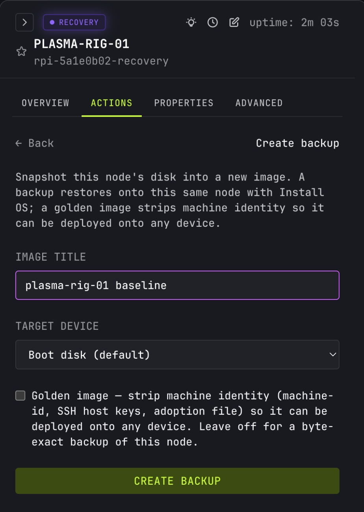
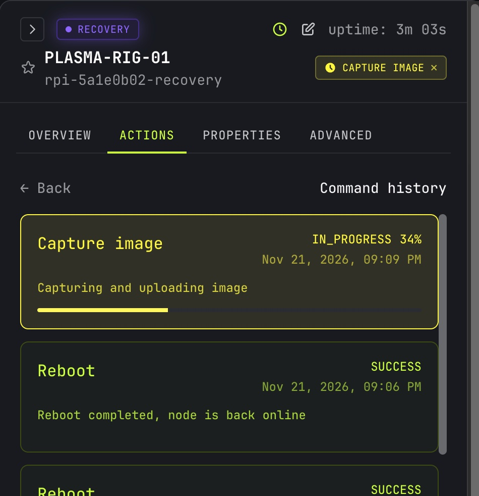
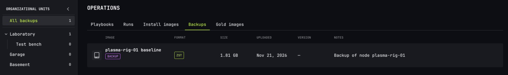
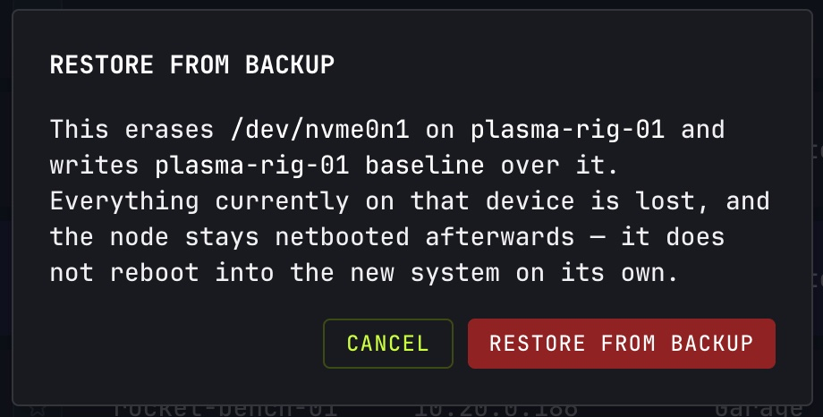
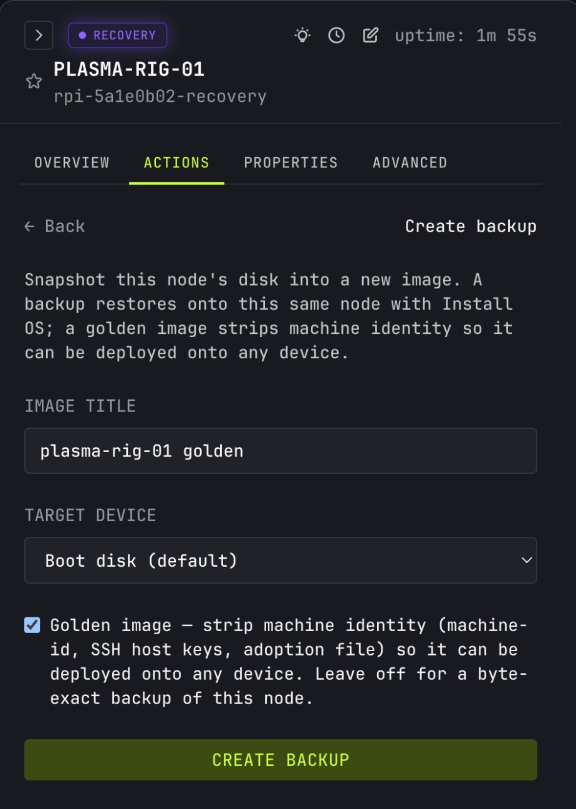

Backups and gold images
Copy a node's drive to the server, put it back, or turn it into an image for other nodes.
Copy a node's drive to your server and put it back later, or turn a configured node into a gold image you install on other nodes. Both are taken while the node runs the recovery system.
Back up a node's drive
- Open the node, go to Actions and click Reboot to recovery. Wait until it shows RECOVERY.
- Under Provisioning, click Create backup.
- Type an Image title. Leave Target Device on Boot disk (default) unless the system lives on another drive.
- Leave Golden image unticked and click Create backup.
- Open Command history and wait until Capture image reads SUCCESS.
- Click Reboot. The node starts its own system again, because Reboot to recovery lasts for one boot.

The capture checks the filesystem, shrinks it to its data, then reads and uploads the drive. The terminal is unavailable while it runs. A fresh Ubuntu on a 1 TB drive came to 1.8 GB and took about six minutes.

The backup appears under Operations → Backups. Click it to see which node it was captured from, download it or delete it.

Restore a backup
- Reboot the node to recovery.
- Under Provisioning, click Restore from backup.
- In Image, pick the backup. Backups and gold images are listed after the OS images.
- Pick the Target Device and click Restore from backup.
- Read the confirmation and click Restore from backup again.
- When Command history shows the install has finished, click Reboot.

The node stays in recovery after the restore until you reboot it. Check that Properties → Boot behavior reads Local OS before you do.
Restored onto the same node, a backup boots as that node. Restored onto a different node, the server strips the machine identity during the install so the copy doesn't clash with its source.
Make a gold image and install it on other nodes
A gold image is a backup without the machine identity: machine-id, SSH host keys, the adoption file, network state and hostname. Set up one node the way you want every node, then capture it.
- Reboot the configured node to recovery.
- Click Create backup, give it a title and tick Golden image.
- Click Create backup and wait for SUCCESS. The source node keeps its own identity.
- Reboot the source node.
- On each target node, follow Installing an operating system and pick the gold image in Image.

Gold images are listed under Operations → Gold images.
What a backup holds and where it lives
A backup covers the drive up to the end of the system partition, with free space trimmed, stored compressed. It restores onto a smaller or larger drive as long as the data fits. A drive with a partition after the system partition can't be captured.
Backups and gold images live in your server's image storage, on local disk or in the bucket if the server uses object storage. They count toward the image limits set by whoever runs the server (IMAGE_MAX_PER_ACCOUNT, IMAGE_MAX_BYTES_PER_ACCOUNT, IMAGE_MAX_BYTES_INSTANCE in CONFIGURATION.md). Nothing deletes them for you.
Who can do this
Admins can create and restore backups. Downloading or deleting an image needs the account's super admin. A backup carries the node's credentials, so treat a downloaded copy as a secret.